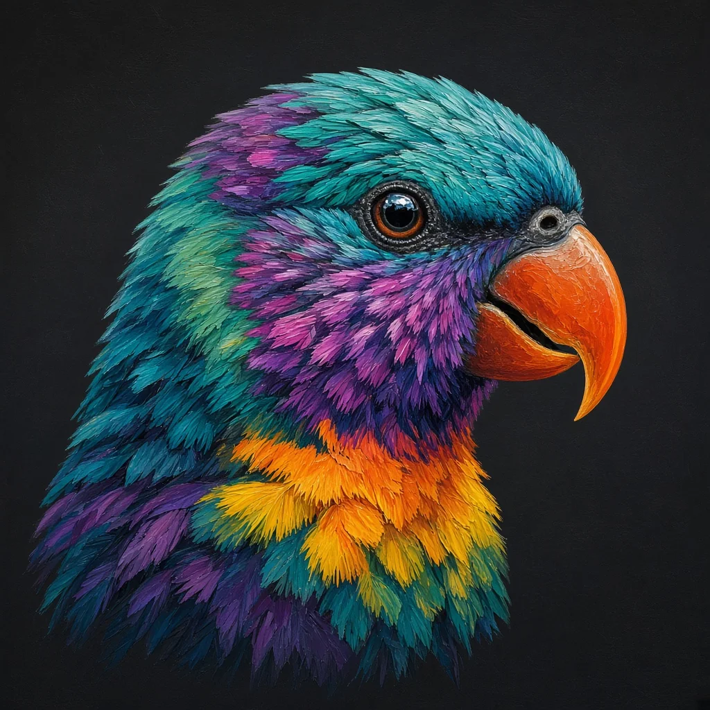

Species recorded
Transects surveyed

Bird of the season
Ember lorikeet
Fictional species · first nesting pair on the estuary since the survey began.
Transects surveyed

Bird of the season
Fictional species · first nesting pair on the estuary since the survey began.
Sample data · fictional survey, observers and the Ember lorikeet